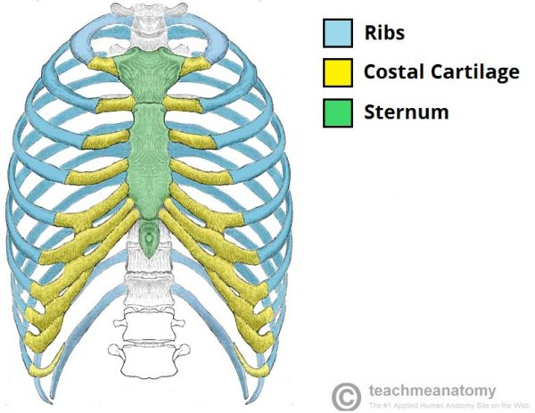
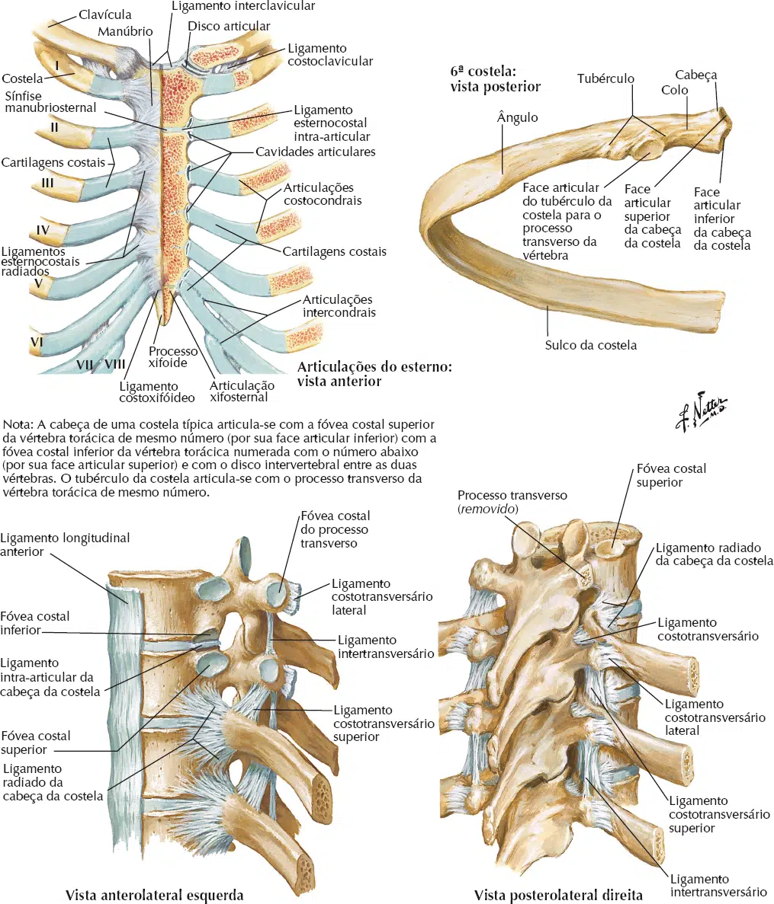
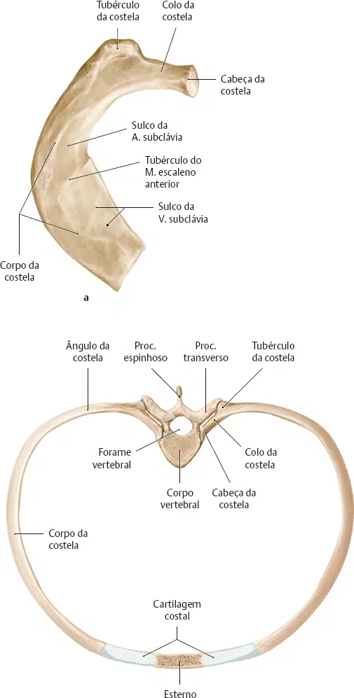
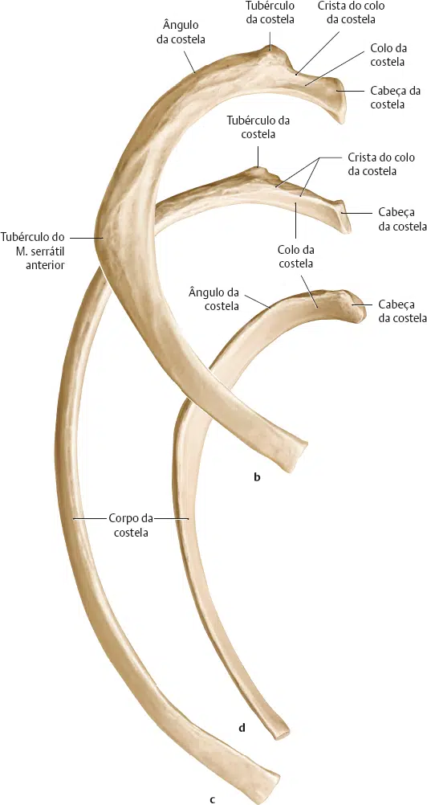
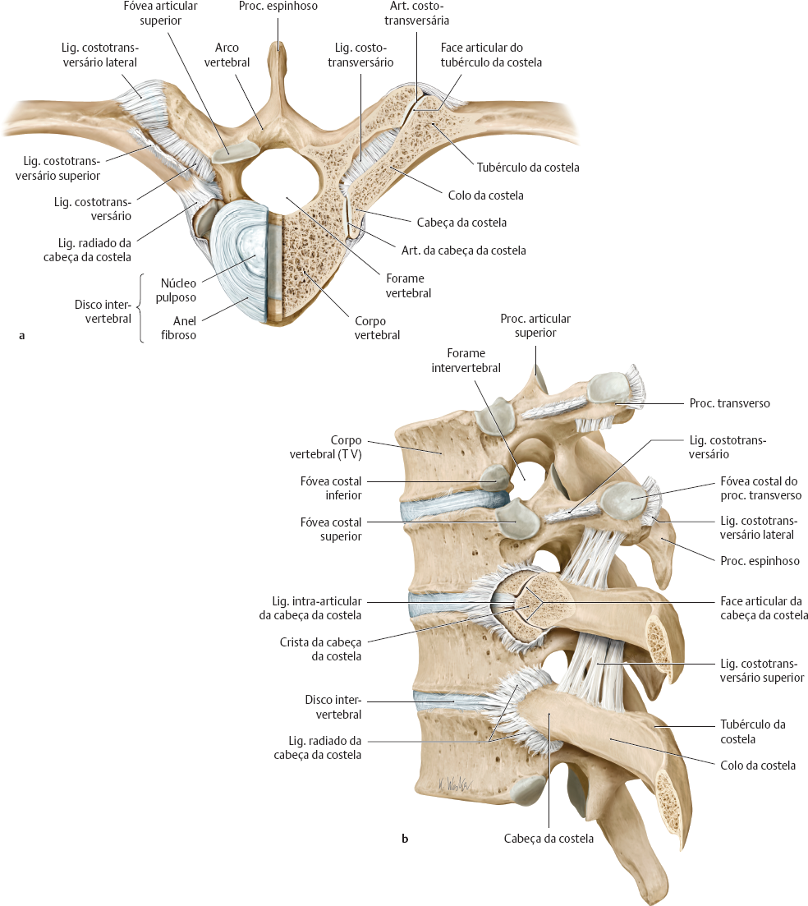
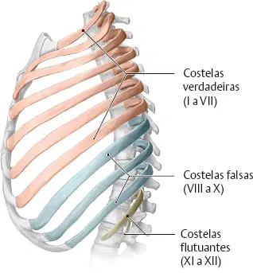

As costelas são um conjunto de doze ossos que formam a “gaiola” protetora do tórax.
Eles se articulam com a coluna vertebral posteriormente e terminam anteriormente como cartilagem (conhecida como cartilagem costal).
Como parte do tórax ósseo, as costelas protegem os órgãos torácicos internos.
Eles também têm um papel na respiração – durante a expansão torácica, a caixa torácica se move para permitir a insuflação pulmonar.

Existem duas classificações de costelas: típicas e atípicas.
As costelas típicas têm uma estrutura generalizada, enquanto as costelas atípicas têm variações nessa estrutura.
A costela típica consiste de uma cabeça, colo e corpo:
A cabeça é em forma de cunha e tem duas facetas articulares separadas por uma cunha de osso.
Uma face articula-se com as vértebras numericamente correspondentes e a outra articula-se com as vértebras acima.
O colo não contém proeminências ósseas, mas simplesmente conecta a cabeça ao corpo.
Onde o colo encontra o corpo há um tubérculo áspero, com uma face para articulação com o processo transversal das vértebras correspondentes.
O corpo da costela, é plano e curvo.
Esta curvatura forma o ângulo costal.
A superfície interna do corpo possui um sulco para o suprimento neurovascular do tórax, protegendo os vasos e nervos contra danos.

Os pares de costelas 1, 2, 10, 11 e 12 podem ser descritas como “atípicas” – elas têm características que não são comuns a todas as costelas.
A 1ª costela é mais curta e mais larga que as outras costelas.
Ela tem apenas uma face na cabeça para articulação com as vértebras correspondentes (não há uma vértebra torácica acima dela).
A superfície superior é marcada por dois sulcos, que abrem caminho para os vasos subclávios.
A 2ª costela é mais fina e mais comprida que a 1ª costela, e tem duas faces articulares na cabeça como de costume.
Tem uma área rugosa na sua superfície superior, onde o músculo serrátil anterior se liga.
A 10ª costela só tem uma face – para articulação com suas vértebras numericamente correspondentes.
Os pares 11 e 12 não têm colo e contêm apenas uma face, que é para articulação com as vértebras correspondentes.


A – 1ª costela;
B – 2ª costela;
C – 5ª costela;
D – 11ª costela (costelas direitas, vista superior).
A maioria das costelas tem uma articulação anterior e posterior.
Todas as doze costelas se articulam posteriormente com as vértebras da coluna.
Cada costela forma duas articulações:
Articulação costotransversária – Entre o tubérculo da costela e a face costal do processo transverso das vértebras correspondentes.
Articulação da cabeça da costela – Entre a cabeça da costela, a face costal superior das vértebras correspondentes e a faceta costal inferior das vértebras acima.

As fixações anteriores das costelas variam:
Do 1º ao 7º par as costelas são anexadas independentemente ao esterno.
Por esta razão são denominadas “costelas verdadeiras“.
Os pares de costelas 8, 9 e 10 unem-se às cartilagens costais superiores a elas.
Por esta razão são denominadas “costelas falsas“.
Os pares de costelas 11 e 12 não possuem uma fixação anterior e terminam na musculatura abdominal.
Por conta disso, são denominadas “costelas flutuantes“.
